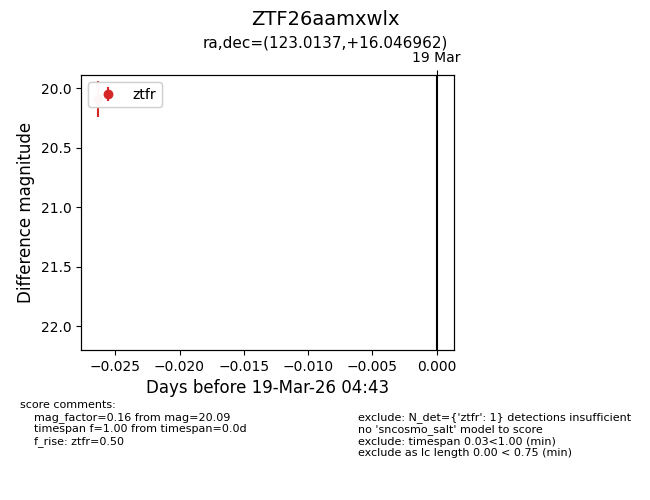
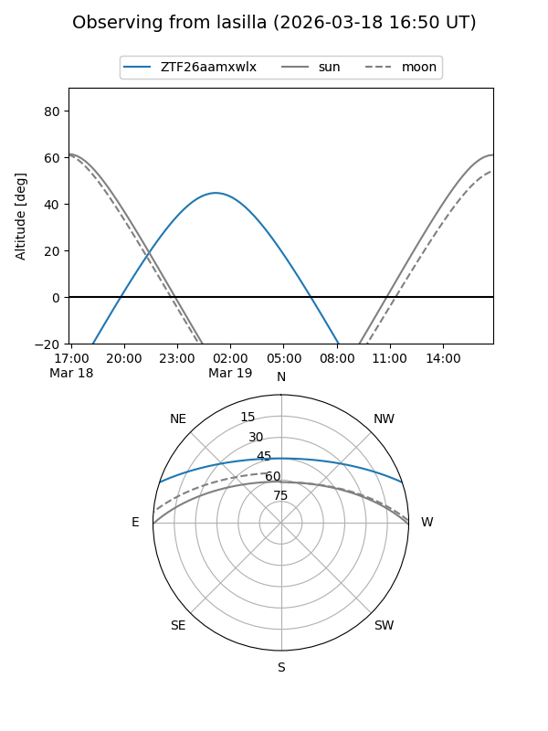
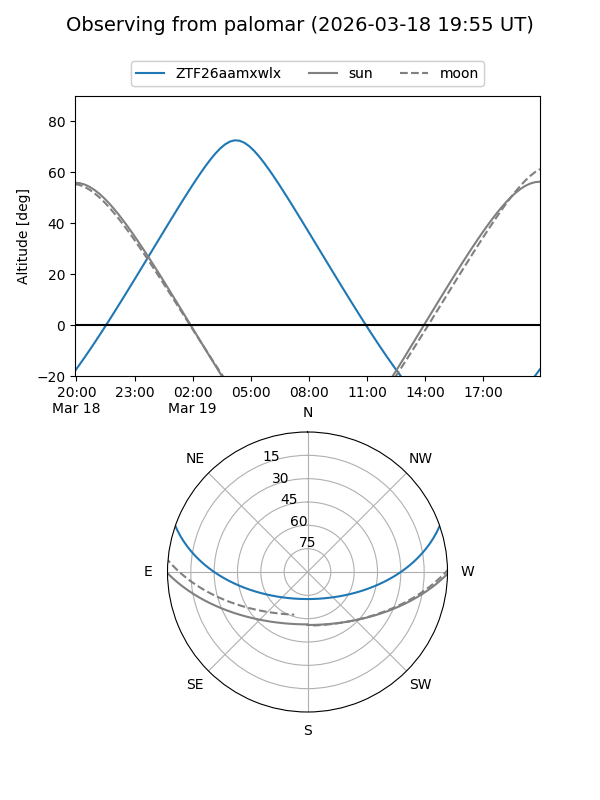

ZTF26aamxwlx
Target ZTF26aamxwlx at 2026-03-19 04:45
Aliases and brokers:
FINK: link
Lasair: link
ALeRCE: link
alt names
ZTF26aamxwlx (ztf,fink_ztf)
Coordinates:
equatorial (ra, dec) = 123.0137,+16.04696
equatorial (HMS+DMS) = 08:12:03.30,+16:02:49.06
galactic (l, b) = (206.9191,+24.88141)
Flags:
Photometry:
last ztfr=20.09
1 ztfr detections
Lightcurve

Visibility


Additional plots